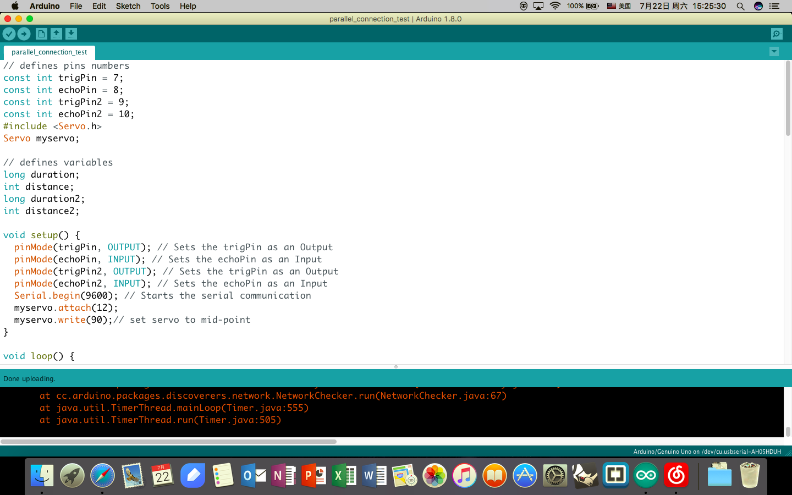
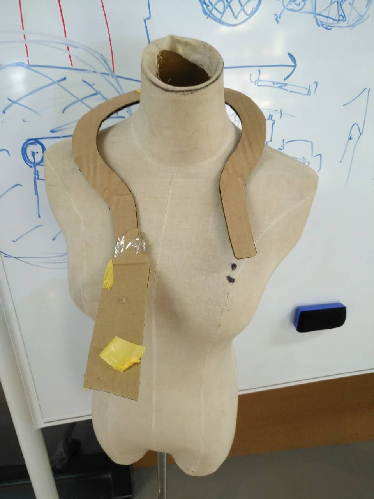
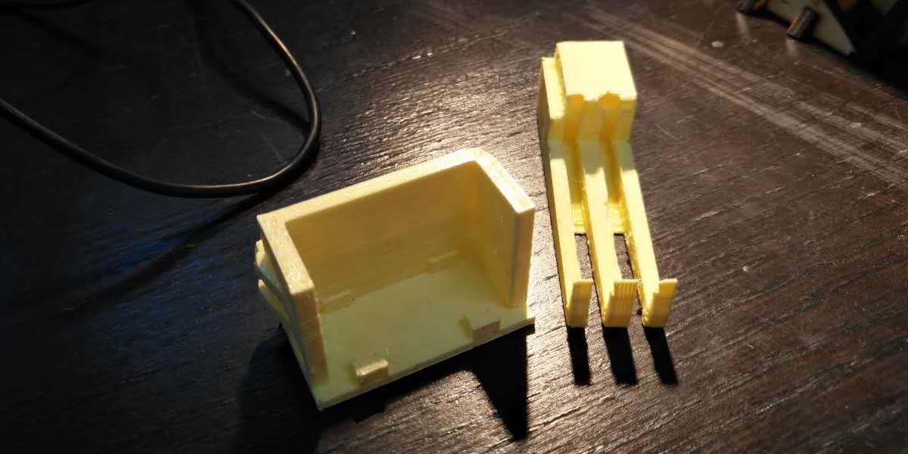
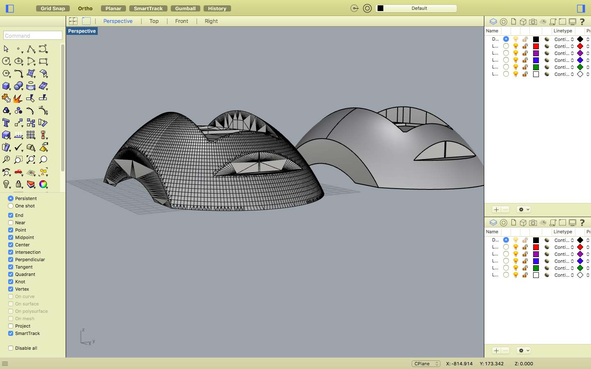
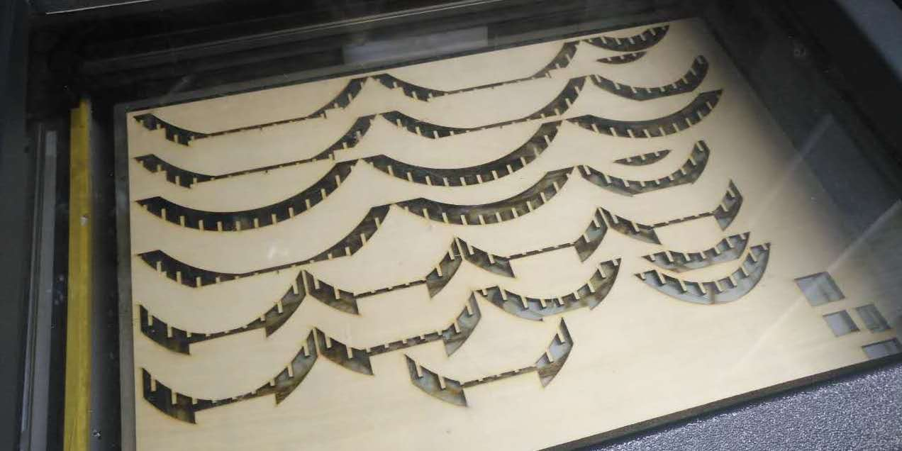
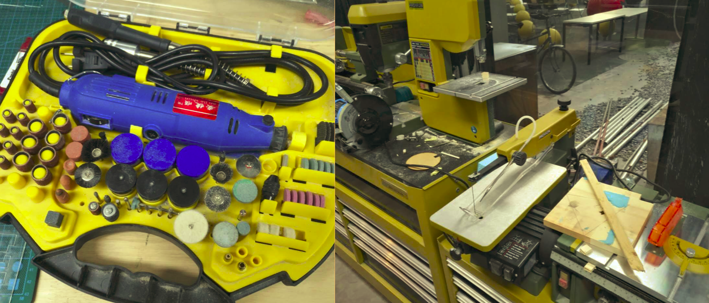
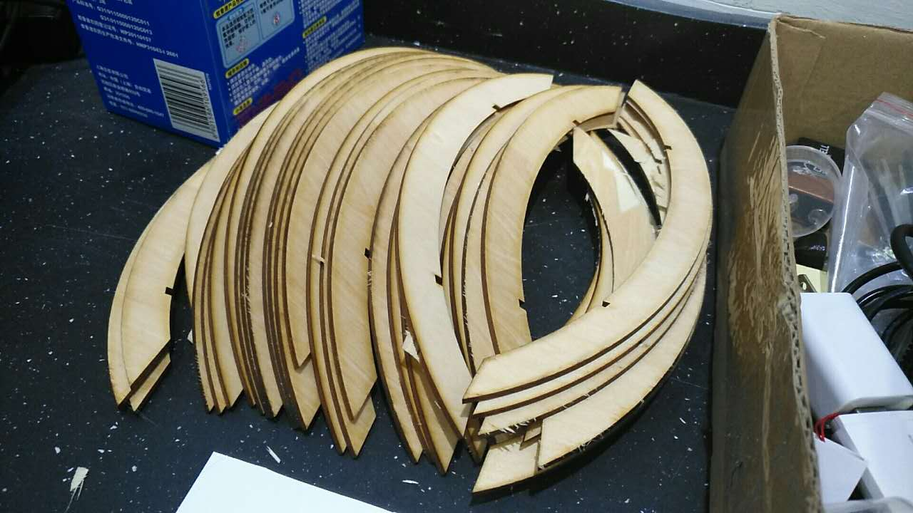
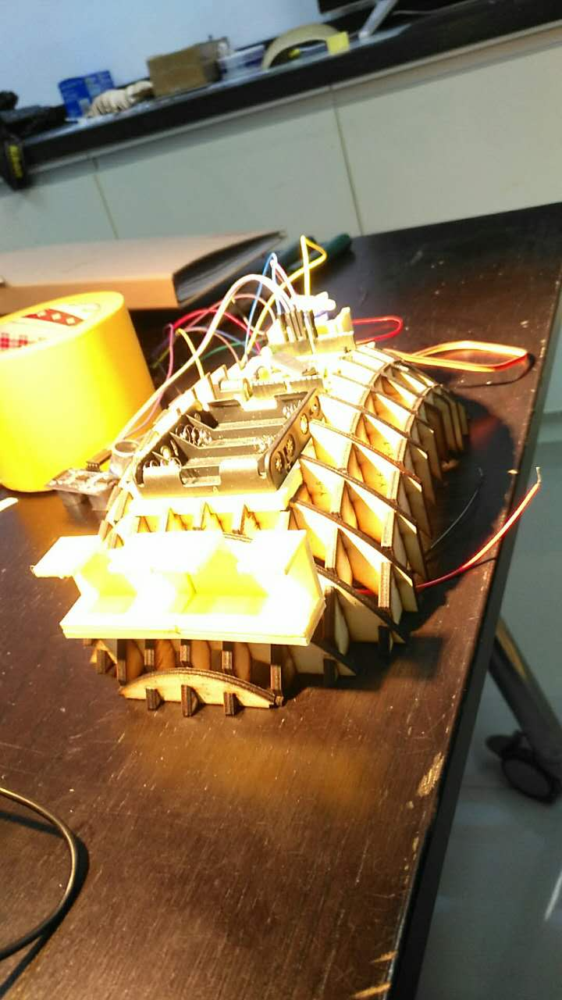

Final Project
My final project is a heat-mounted obstacle detector. It can be used as an accessory equipment that helps blind people walk on the streets. In Shanghai, blind sidewalk are always occupied by cars and bicycles. Therefore, blind people can only walk with their sticks away from sidewalks which may not protect them from collisions against heads. With the help of the detector, their heads can be better protected. The detector has two ultrasonic censors installed in the front of it. A motor is installed at its back. When the censors detect any obstacles within 50 centimeters in front of it, the motor will start to shake. If the person is still walking ahead, the motor will shake even faster to remind the person using both sound and vibration. Also, the innovation can be used for cellphone users as they may need to use their phone when walking. The pictures of the first version of it are shown on this page.
In my conception, the next version of it will have a cover that covers all the wires and core components and make them invisible from outside. The angle of the two censors will also be respectively adjustable. The materials used to make it and its shape will also be changed in order to make users feel more comfortable. Further innovation can even make the censor automatically distinguish the obstacles in front of it and adjust the persons routes that can completely liberate the blind from being trapped in the maze of bicycles.
Now let's see how I made my detector!
This is the origin of my innovation.
Image F01
This is a screenshot of my computer that shows the page of the software Arduino. Arduino is a programming software that helps us send command to the PCB board installed on the detector using its own "language".


Image F02
At first, I wanted to make a detector that was like a scarf which was tied around my neck like the picture on the left. However, the time limitation of the project and the size of it (almost all of the components needed in this scheme would be 3D printed) made me change my idea. Also, the problem existed was that the main body of this device would need to be elastic, which was not possible for the filaments used in 3D printing.
Image F03
These are some of the holders I once tested to hold the electronic components. Many of them were finally trashed as a sacrifice for innovation.


Image F04
This a screenshot from Rhino. This model shows my design of the main body of the detector on my computer. After that, I used another software called Autodesk to transform the solid body into an interlocking framework.
Image F05
This image shows the laser cutting machine working to cut the shape needed for the framwork of the mainbody out of a plywood board.


Image F06
These are some of the machines I once used to make the mainbody. When it was cut, the verge of the plywood board was still a little bit rugged, so I filed them with the help of these machines.
Image F07
This image shows the plywood board I cut for a trial. Unfortunately, they could not be arraged properly and some of them were even broken in the process of cutting. Although this trial failed, it provided me with a lot of useful and reliable data that I used in the final designing.


Image F08
This is what the detector looked like when it was almost completed. At last, I glued all the elctronic components and welded them together. Finally, the device became working!